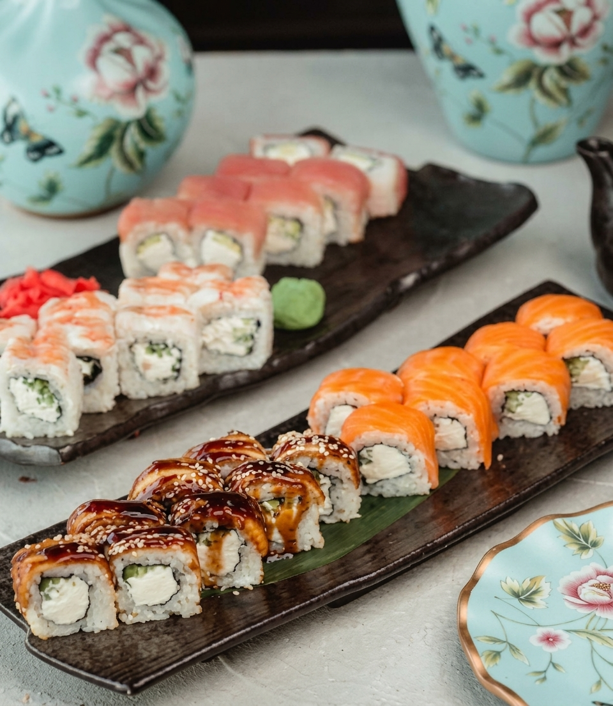
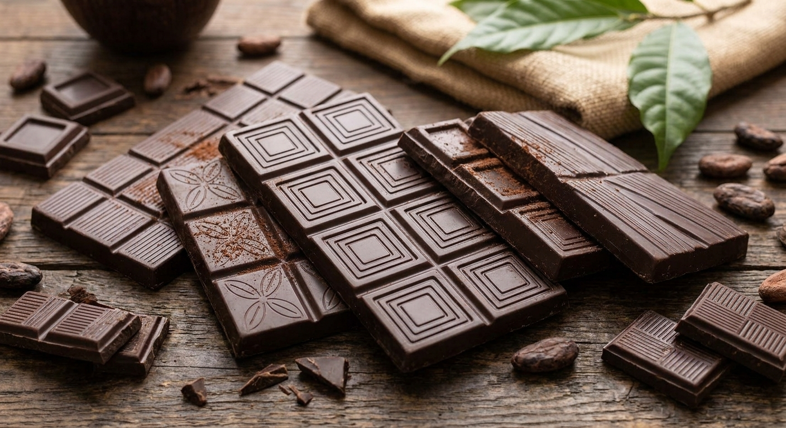
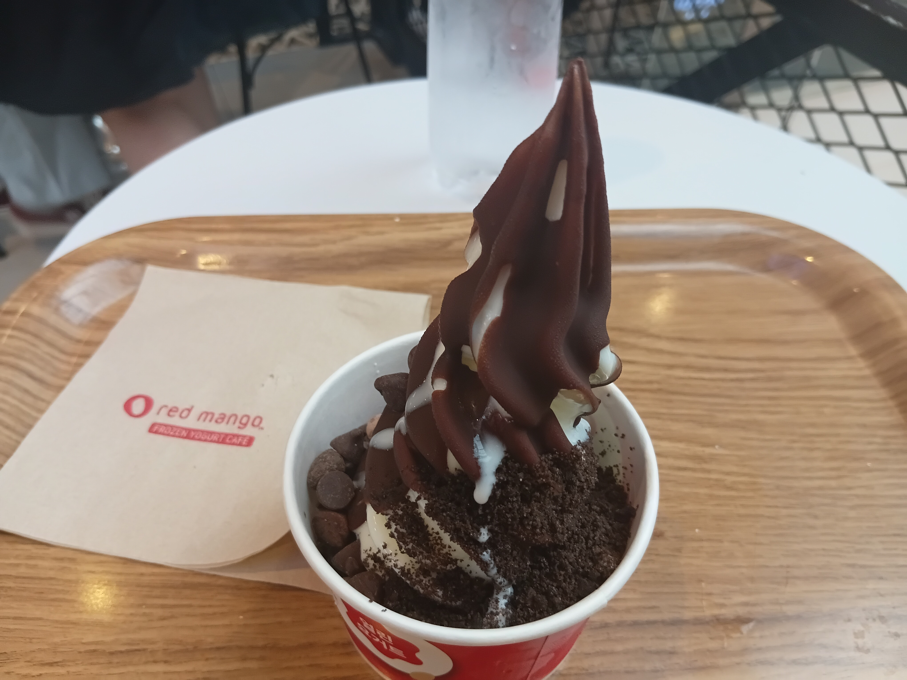
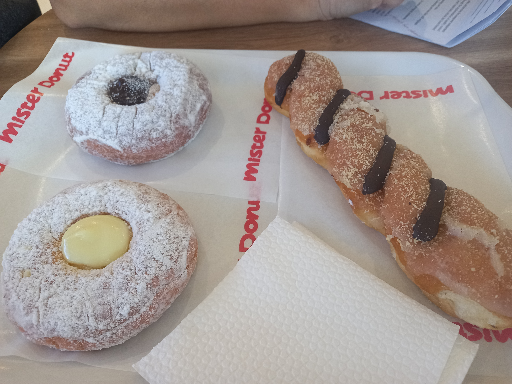
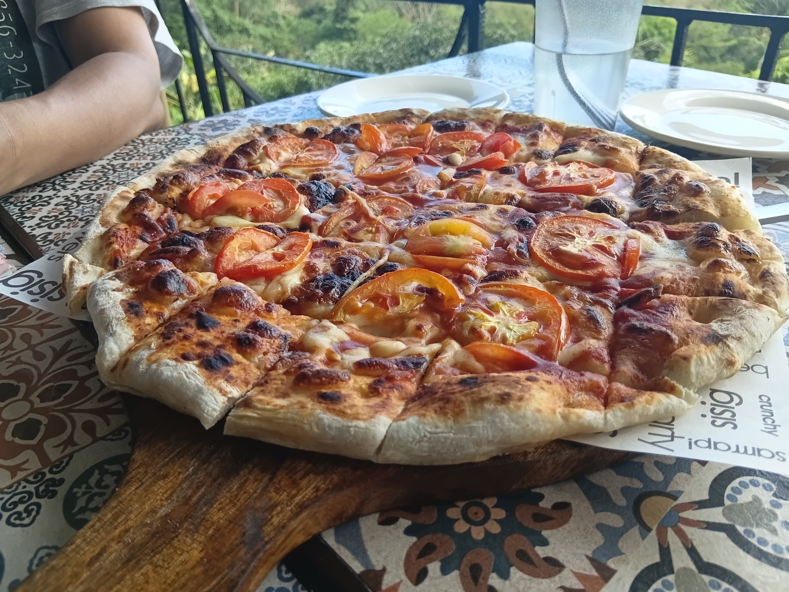
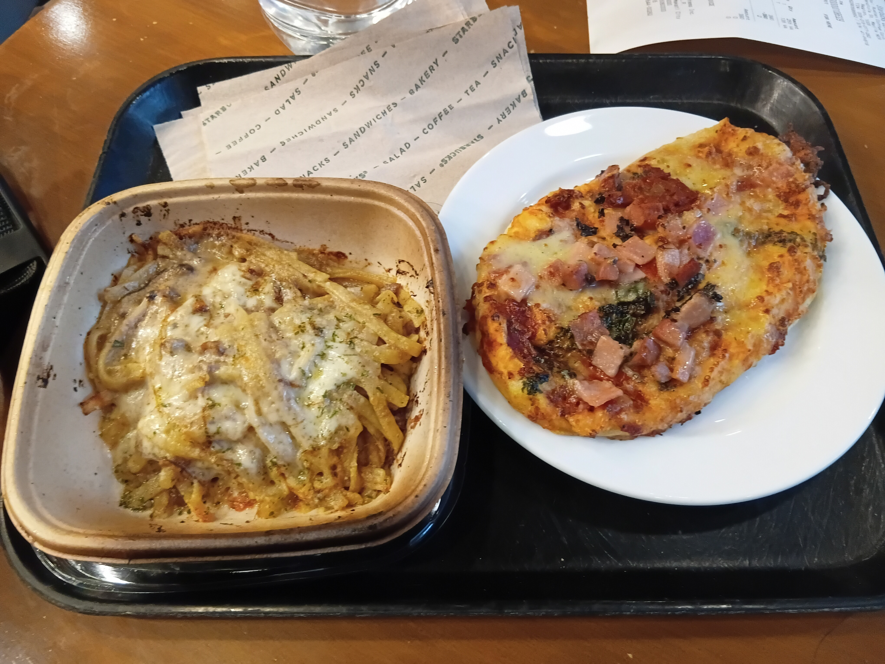
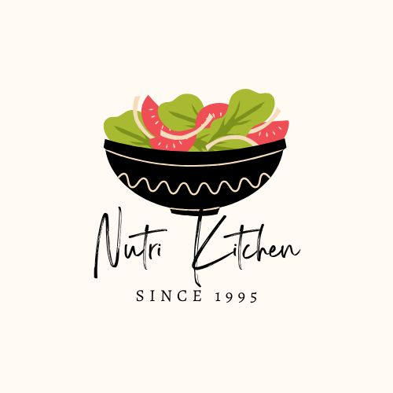

Food Blog
La Sallistang Tindero Says (Uncensored)
Functional Foods Video

The Luscious Taste of Sushi and Its History and Legacy to the Worldwide Palette
Japanese cuisine has been touching Filipinos’ minds and souls for several decades. Because of the inherent complexities of crafting Japanese dishes, Filipino diners rely on restaurants that specialize in Japanese cuisine.
Read more ›
Crave Cacao and the Roots of the Philippine Chocolate Industry
Bars and chips of chocolate have been part of the sugary palette of Filipinos and non-Filipinos for decades. They are often consumed after one’s main course meal is over, but with reasonable dietary limits to prevent health complications—notably diabetes—from occurring.
Read more ›
The Chocolate-Coated Oreo-Chip Yoghurt Treat and the History of Red Mango and the Philippine Ice Cream Industry
Ice cream has been a staple in the Philippine confectionery market. Well-renowned local brands like Selecta and Magnolia have been endearing Filipino hearts and taste buds for decades.
Read more ›
Delectable Mister Donuts and the History of the Multinational Chain
Together with Dunkin’ Donuts and Krispy Kreme, Mister Donut remains one of the most admired and revered doughnut chains in the Philippines and in other parts of the planet.
Read more ›
The Integration of Margherita Pizza at Padi’s Point
Just like carbonara and lasagna, pizza will always remain in the hearts of the Filipino gustatory landscape.
Read more ›
The Delectable Palette of Starbucks’ Italian Picks
The infusion of Italian cuisine has been a staple in the Philippine culinary scene. In fact, restaurants like Greenwich, Pizza Hut, and Shakey’s have been part of the lives of millions of Filipinos for about seven decades.
Read more ›Our Food Brands
Food to turn you into the Person you were meant to be.
CarboLoad
Eat Up & Power Up !
Brain Food
Unlock your Potential !

NutriKitchen
Where Nutritious is Delicious !